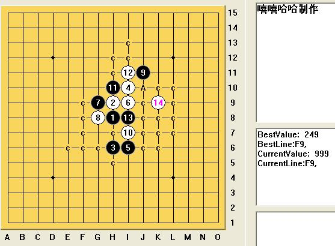
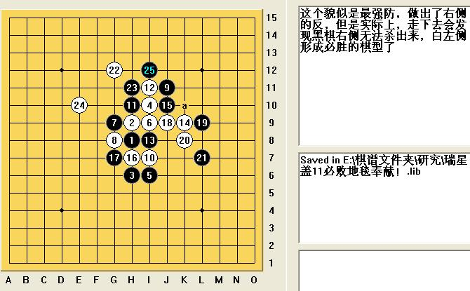
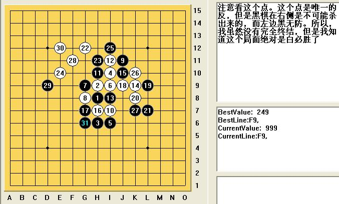

应聂淼的提问，特此做出瑞星盖帽4上11必败提示！
#1 应聂淼的提问，特此做出瑞星盖帽4上11必败提示！ 作者：wd1988 发表时间：2009-3-7 16:12:50
=======上图对应的爱五子棋谱代码如下，以便你拆解：========
h8h9h6i10i6i9g9g8j11i7h10
======================================================
聂淼同学给出了这个11是否必败的问题，经过仔细论证证明这个11确实必败！必胜路线如下图所示：



因为这个最强路线暂时没有完全地毯，但是我认为实战绝对地毯了。“地毯谱”我还没有制作完成，就差如图所示一路反没有解决，所以暂时不放上来。我仔细验证，确实黑反无效，白顺利杀出的话，立马献上地毯终结谱！
［本站用户 逆刃 于 2009-3-7 16:18:19 花5个金币送您鲜花一朵］
［本站用户 wrwak 于 2009-3-8 9:24:00 花5个金币送您鲜花一朵］
#2 Re:应聂淼的提问，特此做出瑞星盖帽4上11必败提示！ 作者：逆刃 发表时间：2009-3-7 19:10:05
我喜欢有注释的棋谱，呵呵。#3 Re:应聂淼的提问，特此做出瑞星盖帽4上11必败提示！ 作者：刀魂 发表时间：2009-3-7 22:05:18
瑞星前12手 谁变 谁输！！！我记得小刀 曾经说过的。。。#4 Re:应聂淼的提问，特此做出瑞星盖帽4上11必败提示！ 作者：游戏人间 发表时间：2009-3-8 1:24:59
一楼的太损了。你这个走法最起码国内国际有超过50人知道黑在右边怎么胜的了。。。这个11黑是必败了。但是必败太复杂了而且属于内部研究就不公开了。［本站用户 无尽 于 2009-3-8 9:41:40 花5个金币送您鲜花一朵］
#5 Re:应聂淼的提问，特此做出瑞星盖帽4上11必败提示！ 作者：wd1988 发表时间：2009-3-8 9:56:54
楼上的，“内部研究”不发出来没人会怪你，别人积极给出自己的研究成果分享，你还来损我，那就是你的不对了。这一路变化黑在右侧的胜利我拆过，白确实有唯一防。当然我的唯一防可能是错误的。但是既然“大师”们都不跑出来告诉我到底该怎么做，反而怪我误导大众，这话就说的实在没道理。国际上下连珠的有肯定不少于五千，仅仅50人知道怎么必胜的局面，我又怎么可能会知道呢？那我岂不是进入世界前50了？［本站用户 无尽 于 2009-3-8 10:02:21 花5个金币送您鲜花一朵］
#6 Re:应聂淼的提问，特此做出瑞星盖帽4上11必败提示！ 作者：lijeki 发表时间：2009-3-8 10:50:38
4楼的话是有点损，不过也可以理解为一个提醒，他的话也是有助于终结这个变化的#7 Re:应聂淼的提问，特此做出瑞星盖帽4上11必败提示！ 作者：行云流水 发表时间：2009-3-8 10:56:14
=======上图对应的爱五子棋谱代码如下，以便你拆解：========
h8h9h6i10i6i9g9g8j11i7h10i11i8k9j10h7g7j9l9k8l7g12h11e10i12k10k7f11d9e12g6f6f8d11f9g10d13i5m7
======================================================
以上是黑必胜变化。本来是不想发的，但是看了楼主转发在茗弈的那个变化，才知道原来楼主以为的必胜其实不是必胜变化。那个我倒真是没有见过。
批评还是要谦虚听取的，尽管或许有时候会刺耳。我看也主要是你自己说的“因为这个最强路线暂时没有完全地毯，但是我认为实战绝对地毯了。”引起的争议。
［本站用户 无尽 于 2009-3-8 10:58:02 花5个金币送您鲜花一朵］
#8 Re:应聂淼的提问，特此做出瑞星盖帽4上11必败提示！ 作者：行云流水 发表时间：2009-3-8 11:00:45
另外，就目前所知的终结变化，确实不是楼主这样杀的。#9 Re:应聂淼的提问，特此做出瑞星盖帽4上11必败提示！ 作者：wd1988 发表时间：2009-3-8 11:35:14
行云流水至少比某些人中肯，说话还是有依据，让人信服的。虽然我看了图，仍然不知道如何黑必胜（水平问题），但是我对于他终于还是战胜自我，把这个提示发出来，我觉得还是很不错的。研究者，越站在高处，越不愿意分享自己的研究，我是理解的。但是适当地指点后辈，难道也是怕被人超越，甚至被外国探子刺探了机密？我觉得也是不会的。希望这些大师们，要么就勇敢地站出来指点，要么就静静地沉默。用讥笑的口吻来面对有误的研究，这不是大师的行为。我作为一个普通人，也是绝对不可能高尚到面对讥讽还微笑面对的#10 Re:应聂淼的提问，特此做出瑞星盖帽4上11必败提示！ 作者：行云流水 发表时间：2009-3-8 11:37:24
战胜自我谈不上，只是看到一方指出错误之处，另一方却迷迷糊糊的，觉得头晕，所以索性多嘴说一下而已。#11 Re:应聂淼的提问，特此做出瑞星盖帽4上11必败提示！ 作者：wd1988 发表时间：2009-3-8 11:44:36
“指出错误之处”当然是好的，但不知楼上是否有这样的经历：旁观两个菜鸟下棋的时候，你指点一二，平常很多人可能会对大师你的指点感激万千，但是偏偏你眼前这两个菜鸟就是不按你说的下。你多说两句，他还要骂你“装什么装，嚣张个啥呀？”其实这种思想很好理解，就是说：你比人家厉害，相差不远的，知道你是好意，是指点；差得远了，就觉得你是在羞辱他，是在装B。我觉得我现在就是那个菜鸟，不知好歹，也是水平不够，对吴大师那一句话的“含金量”理解不够。对我来说，一张图的指点，远远比简单的一句“这个错了，回去自己考虑清楚再来，否则别来丢人”这样的指点要容易接受得多。
也许很多段位高手会觉得这样一句话的指点已经够了，是因为他们长期站在实力的顶峰，习惯了颐指气使地说话，而忘了“平等”是怎么写的。当然，本来我这个菜鸟和大师就是不平等的，大师不愿意给我好话听，我也不在乎，还是找别的比我厉害的菜鸟请教来得爽快
#12 Re:应聂淼的提问，特此做出瑞星盖帽4上11必败提示！ 作者：yoda 发表时间：2009-3-8 11:53:57
我刚才看了楼主的帖子拆了拆确实胜了。发两个图供参考。
=======上图对应的爱五子棋谱代码如下，以便你拆解：========
h8h9h6i10i6i9g9g8j11i7h10i11i8k9j10h7g7j9l9k8l7g12h11e10i12k10k7f11d9e12g6f6f8g10d13d11f9i5m7n7k6j6l6l8j5m8n8k5l4l5m5n4k3j2i4h3k4
======================================================
=======上图对应的爱五子棋谱代码如下，以便你拆解：========
h8h9h6i10i6i9g9g8j11i7h10i11i8k9j10h7g7j9l9k8l7g12h11e10i12k10k7f11d9e12g6f6f8d11f9g10d13i5m7n7k6j6l6l5k5j4m5j8l10l8n8o9m6
======================================================
#13 Re:应聂淼的提问，特此做出瑞星盖帽4上11必败提示！ 作者：游戏人间 发表时间：2009-3-8 11:58:41
 来了。可能我发那话确实打击了。但是原因是。。这个黑胜变化在天羽的板块里是当VCT习题出的。。。。
来了。可能我发那话确实打击了。但是原因是。。这个黑胜变化在天羽的板块里是当VCT习题出的。。。。
#14 Re:应聂淼的提问，特此做出瑞星盖帽4上11必败提示！ 作者：wd1988 发表时间：2009-3-8 12:01:08
感谢yoda这样的好人，我们这样的菜鸟需要的就是这样的导师！另：首先，天羽大师我是远远比不上的，吴大师顾大师也是远远比不上的，所以他出的题目，我做不出来正常；其次，如果这个局面成为了VCT的题目，按道理应该是公开了，那么行云流水大师的语气，似乎又让我有点疑惑。。。。不过我既然已经知道了这个路线不对，那么我肯定就是那一条路线。我回去再拆拆，拆出来了我照样放在网上，请大家继续指正！
鸣谢yoda，顾大师，吴大师，还有天羽大师
#15 Re:应聂淼的提问，特此做出瑞星盖帽4上11必败提示！ 作者：yoda 发表时间：2009-3-8 12:07:19
都是棋友不必客气。楼主的分享精神是好的，如果能严谨些就更好了。有拿不准的地方可以和大家讨论，没实证前下定论还是要慎重的。#16 Re:应聂淼的提问，特此做出瑞星盖帽4上11必败提示！ 作者：wd1988 发表时间：2009-3-8 12:09:02
如果这真是VCT的题目，照游戏人间的说法，竟然国内国外只有50个人知道怎么胜，我也释然了。。。#17 Re:应聂淼的提问，特此做出瑞星盖帽4上11必败提示！ 作者：行云流水 发表时间：2009-3-8 20:26:44
声明在前，我只是路过，看见这么争论有点偏了，所以多嘴说说。我不是什么大师，“大师”二字愧不敢收。
不管是学的早还是学的晚，在研究探讨上，大家是平等的。不因为实力强说话就一定对，反之则然。其实我个人觉得棋友之间不要因为觉得自己刚开始学，别人说两句就是在挖苦自己。更多的是自己的心态好点，或许更好。我想，水平再强，也是从无到有的，要是看不起初学者，嘿嘿，恐怕这个人是称不上合格的棋手的。
每个人的开导方式不同，象我就不如YODA那样给出了主要图。所以这点可能是各人的方式不同。因为考虑楼主能拆解倒这个份上，应该具备相当水准了，所以提示关键点，以为应该是可以拆解出来的。
#18 Re:应聂淼的提问，特此做出瑞星盖帽4上11必败提示！ 作者：极地剑客 发表时间：2009-3-8 23:10:07
确实是败~但正确的必胜走法更简洁~很多网络谱上也有的噢~支持楼主再接再厉~#19 Re:应聂淼的提问，特此做出瑞星盖帽4上11必败提示！ 作者：gerbo 发表时间：2009-6-9 21:37:30
=======上图对应的爱五子棋谱代码如下，以便你拆解：========
h8h9h6i10i6i9g9g8j11i7h10i11i8k9g6j9l9i12i13j6k8j7j10
======================================================
24? 迷糊~~
#20 Re:应聂淼的提问，特此做出瑞星盖帽4上11必败提示！ 作者：gerbo 发表时间：2009-6-10 0:19:39
已经解决.24做眠三,跳三也行..
#21 Re:应聂淼的提问，特此做出瑞星盖帽4上11必败提示！ 作者：茗弈南极的绿洲 发表时间：2009-6-15 13:05:09
=======上图对应的爱五子棋谱代码如下，以便你拆解：========
h8h9h6i10i6i9g9g8j11i7h10i11i8k9j10h7g7
======================================================16放这里比较好，17唯一了。
=======上图对应的爱五子棋谱代码如下，以便你拆解：========
h8h9h6i10i6i9g9g8j11i7h10i11i8k9j10h7g7j9l9k8l7e10g12
======================================================22关键步，23也是唯一了。
=======上图对应的爱五子棋谱代码如下，以便你拆解：========
h8h9h6i10i6i9g9g8j11i7h10i11i8k9j10h7g7j9l9k8l7e10g12f9d11e8
======================================================26手巧妙的很，我个人觉得是比较强的一个点，也有不少老棋手同样觉得这个点可行，当然黑右边是无论如何也是杀不出来的，不用担心。有没有其他更简单的杀法我不知。
=======上图对应的爱五子棋谱代码如下，以便你拆解：========
h8h9h6i10i6i9g9g8j11i7h10i11i8k9j10h7g7j9l9k8l7e10g12f9d11e8k6j6j5m8l8l6i12f7
======================================================攻攻，也没办法挡白的势能。
=======上图对应的爱五子棋谱代码如下，以便你拆解：========
h8h9h6i10i6i9g9g8j11i7h10i11i8k9j10h7g7j9l9k8l7e10g12f9d11e8k6j6j5m8l8l6e6f8e11f10
======================================================之后不难拆解，白杀。
 反正迟早大家都要知道，索性做回好人。只要别拿这个出去忽悠人就行。
反正迟早大家都要知道，索性做回好人。只要别拿这个出去忽悠人就行。